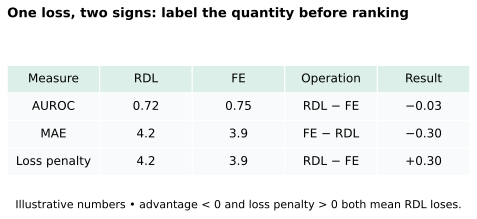
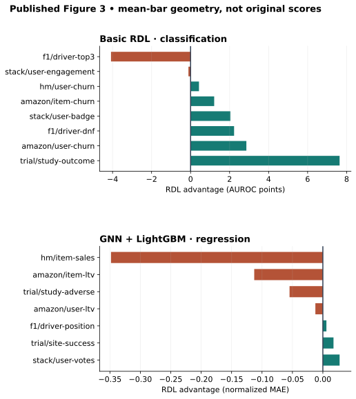
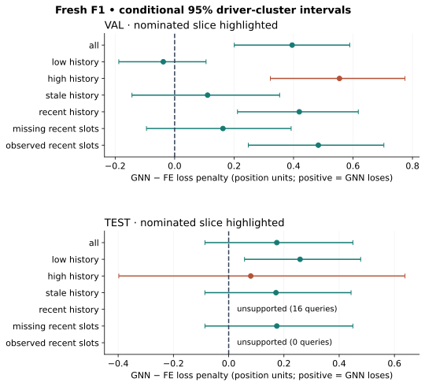

Year 4 · Quarter 3 · Lesson 149
Weakest RelBench tasks: stress-test the thesis
The question: where does learned relational prediction lose to a strong feature-engineered baseline—and what would change your mind about the explanation?
Lesson 148 asked which component earns a gain. That leaves a harder question: which tasks fail to produce a gain at all? The mission is to demonstrate useful relational learning, so a weakness catalog is part of the evidence for the thesis. A catalog records counterexamples instead of hiding them behind a benchmark average.
Your tangible win: produce a provenance-aware task ranking and a one-page weakness profile. The core reading and worked example are a short session; the full-data lab and reproduction appendix are a separate session.
Read first: RelBench v1 §6, Figure 3 and Appendix C.2. Read the output-head qualification before comparing its regression results with Table 7. Released user-study code is the primary source for the manual feature-engineering comparator.
1 · Recall before looking¶
Without opening the preceding lessons, write two sentences: why can removing graph history change more than architecture, and why do five seeds on one database not establish cross-database robustness?
2 · Make “weak” mean something precise¶
In plain terms. A model can have a respectable score and still lose to a cheaper or better-informed baseline. Weakness is comparative. First specify which two complete procedures you are comparing.
Feature engineering (FE) means computing task-specific input columns from the database, such as a driver's recent standings. A tree model then learns from those columns. RDL here means a learned row encoder and graph neural network that combine relational context to predict a query target. Both can use information from multiple tables. This is not a comparison of “relational information” against “no relational information.”
A query is an entity together with a prediction cutoff. The same driver at two dates is two different queries. A fair error comparison aligns both predictions with the same (driver_id, cutoff) and target, rejecting missing or duplicate keys.
AUROC measures how often a positive example receives a higher score than a negative example, with half credit for ties. Higher is better. MAE, mean absolute error, averages the absolute distance between a prediction and its target. Lower is better. MAE carries the target's units.
Worked example. Suppose RDL has MAE 4.2 and FE has MAE 3.9. RDL loses by 0.3. For an oriented advantage that is always positive when RDL wins, use FE − RDL for MAE: −0.3. If AUROCs are 0.72 and 0.75, use RDL − FE: −0.03, or −3 percentage points. Never sort −0.3 position units beside −3 AUROC points as if their magnitudes were comparable.
The signed advantage: A = RDL − FE for AUROC; A = FE − RDL for MAE. The weakest point estimate sorts first, with the smallest A. Our slice plots later use a loss penalty D = |y − GNN| − |y − FE|: positive D means the GNN loses. Thus for MAE, A = −mean(D). Each plot labels its sign.

How this extends Lesson 137. That lesson diagnosed slices within one F1 comparison. Here we first catalog weaknesses across published tasks, then use a fresh F1 replay to practice the same diagnostic discipline. Reusing that analysis pattern does not create new cross-database evidence.
Normalization changes the question. Figure 3 divides each regression score by that task's RDL score. Its RDL bars equal 1. This differs from Lesson 136’s leaderboard NMAE, which divides MAE by training-target standard deviation. Both remove the raw units, but their denominators and interpretations differ; do not combine their rankings. A normalized advantage of −0.35 means FE MAE is about 0.65 times RDL MAE. It does not mean a 0.35-unit error on the original target. Relative gaps can support an ordering under that normalization; they are not universal measures of business harm.
3 · The published weakness catalog¶
Before revealing the catalog, predict whether a basic GNN's F1 score is interchangeable with Figure 3's regression bar.
The answer is consequential. Figure 3 uses GNN features with a LightGBM output head for regression. Table 7 reports basic RDL. An output head is the final mapping from the learned representation to the target. A tree head changes that mapping and the complete training procedure. Appendix C.2 investigates this distinction; it does not prove every regression failure has the same cause.
Classification · AUROC points¶
| Task (figure label) | RDL | FE | RDL advantage |
|---|---|---|---|
| rel-f1/driver-top3 | 78.3 | 82.4 | -4.1 |
| rel-stack/user-engagement | 90.2 | 90.3 | -0.1 |
| rel-hm/user-churn | 69.4 | 69.0 | +0.4 |
| rel-amazon/item-churn | 83.0 | 81.8 | +1.2 |
| rel-stack/user-badge | 88.2 | 86.1 | +2.0 |
| rel-f1/driver-dnf | 72.0 | 69.8 | +2.2 |
| rel-amazon/user-churn | 70.5 | 67.6 | +2.9 |
| rel-trial/study-outcome | 66.5 | 58.9 | +7.6 |
Regression · normalized MAE¶
| Task (figure label) | RDL | FE | RDL advantage |
|---|---|---|---|
| rel-hm/item-sales | 1.00 | 0.65 | -0.35 |
| rel-amazon/item-ltv | 1.00 | 0.89 | -0.11 |
| rel-trial/study-adverse | 1.00 | 0.95 | -0.05 |
| rel-amazon/user-ltv | 1.00 | 0.99 | -0.01 |
| rel-f1/driver-position | 1.00 | 1.01 | +0.01 |
| rel-trial/site-success | 1.00 | 1.02 | +0.02 |
| rel-stack/user-votes | 1.00 | 1.03 | +0.03 |
The catalog covers the 15 tasks in the user study, not all 30 tasks in the initial benchmark. We extracted mean bar endpoints from the paper's SVG, calibrated against its printed ticks, and checked task labels against the rendered figure. Classification scores are displayed to 0.1 AUROC point; regression ratios to 0.01. These are PLOT_DERIVED values, not recovered original logs. Geometric precision does not recover experimental certainty. We have not digitized the error bars, so this is a ranking of mean bars, not a significance ranking.
The ranking identifies rel-f1/driver-top3 as the largest negative classification point gap and rel-hm/item-sales as the largest negative normalized regression gap. Close positions and near-zero gaps should not be read as decisive. The SVG labels one regression task user-votes, whereas Table 7 names post-votes; we retain the figure label and mark the cross-table task identity unresolved. For example, user-engagement has a tiny negative mean gap; the paper's “matches or outperforms” statement is not a count of strictly positive mean differences.

Change the evidence contract¶
Predict before switching panels: can the F1 replay be inserted into the Figure 3 regression ranking? The widget keeps these evidence families separate. It also lets you change how large a disadvantage must be before it is flagged. That threshold is a declared decision rule, not a statistical test. A task falling below the threshold remains in the catalog.
4 · A complete, affordable case study¶
The worst published regression point is H&M item-sales. Our fresh training case is F1 driver-position, selected in advance for a feasible full two-pipeline replay. We profile the published worst task through source evidence and a falsifiable hypothesis; we profile F1 with fresh predictions. We do not relabel the affordable case as the global worst.
Published worst-task profile: H&M item-sales. The task asks the total sales value for an article in the next seven days (the sum of transaction prices). Its large negative normalized gap is evidence about the Figure 3 boosted pipeline. A plausible explanation is that recent sales values and temporal patterns are easier for the engineered features to expose. That is a hypothesis: it needs a cutoff-safe feature audit and a controlled intervention, such as adding the same legal sales summaries to the graph pipeline while keeping queries and selection fixed. If that does not reduce the validation gap, the proposed missing-summary explanation loses support. We have not run that intervention or retrained H&M here.
Fresh F1 protocol. We use the complete released dataset: 7,453 training, 499 validation and 760 test queries. Each label is the driver's mean finishing position in the next 60 days, conditional on participating. Five fresh GNN fits each train ten complete epochs. The graph model uses typed row encoders, relative time, two 128-channel GraphSAGE layers, sum aggregation, fanout 128/64, batch 512 and Adam with learning rate 0.005. The first strict minimum-validation checkpoint is selected, and predictions are clipped to training-label percentiles as in the released pipeline.
The competing FE procedure freshly computes the released SQL columns, fits preprocessing on training rows and performs ten LightGBM trials per seed, five seeds total, followed by selected train-only refits. Each trial has a 2,000-round ceiling and 50-round early stopping. Test results never choose a trial. The notebook exposes the SQL, model, optimizer and training loops in its reproduction appendix.
What stays fixed: task archives, query identities, splits and evaluation target. What differs: representation, preprocessing scope, learning procedure, search budget, and temporal details of the available inputs. This estimates a difference between complete released procedures. It does not isolate the causal effect of message passing.
Scope check. The snapshot caps the database at 2010-01-01. GNN preprocessing uses that released snapshot, while FE category mappings fit training rows. Some FE schedule features reference future scheduled dates with unknown publication times. Static attributes lack historical mutation/arrival records. Event-time checks do not establish what was truly available in production. Original archive/run identity remains NOT_ESTABLISHED.
| Seed | GNN validation | FE validation | GNN test | FE test |
|---|---|---|---|---|
| 0 | 3.159966 | 2.744086 | 4.355555 | 3.921045 |
| 1 | 3.173181 | 2.816721 | 3.989141 | 4.042601 |
| 2 | 3.207023 | 2.773399 | 4.398051 | 3.852457 |
| 3 | 3.149367 | 2.791052 | 3.884890 | 3.980605 |
| 4 | 3.173453 | 2.761390 | 3.987721 | 3.947876 |
VAL mean ± sample seed SD: GNN 3.172598 ± 0.021711; FE 2.777330 ± 0.027905 MAE.
TEST mean ± sample seed SD: GNN 4.123071 ± 0.235929; FE 3.948917 ± 0.070469 MAE.
Test GNN loss penalty +0.174155, descriptive driver-cluster 95% interval [-0.085850, 0.449621]. The interval crosses zero; neither superiority nor equivalence is established. Five paired run labels do not imply common random numbers across model families.

The GNN paper target is validation 3.193/test 4.022 MAE (Table 7). A predeclared ±0.2 MAE descriptive tolerance records closeness; it is not a statistical equivalence test. The historical FE scalar and Figure 3 training randomness are not recovered. Full selected released-pipeline execution is a narrower claim than exact historical result reproduction.
5 · Test the explanation, not just the ranking¶
A slice is a subset of queries defined by a feature available at prediction time. We predeclare six slices in three complementary pairs: low/high history; stale/recent history; missing/observed recent race-slot features. History is the number of strictly earlier result rows. Low history uses the training median, 22. Stale means more than 180 days since a previous result. Missing means at least half of the 24 recent-slot columns are absent.
Cold start means having no prior observed history. It is not synonymous with our low-history slice, which includes drivers with up to 22 records. A bad low-history score alone would not establish a cold-start mechanism.
The support rule: require at least 30 queries and 10 distinct drivers. Support is a floor for interpreting a slice, not a guarantee of precision. Nominate the largest positive mean validation loss penalty among supported slices; ties use the slice name. If none loses, nominate none. Freeze that decision before examining test slice results. All slices stay in the report, including empty ones.
| Split | Slice | Queries/drivers | GNN loss penalty | 95% conditional interval |
|---|---|---|---|---|
| val | all | 499/47 | +0.3953 | [+0.2007, +0.5890] |
| val | low_history | 134/28 | -0.0382 | [-0.1878, +0.1057] |
| val | high_history | 365/35 | +0.5544 | [+0.3220, +0.7748] |
| val | stale_history | 39/32 | +0.1108 | [-0.1436, +0.3532] |
| val | recent_history | 460/41 | +0.4194 | [+0.2115, +0.6178] |
| val | missing_recent_slots | 137/47 | +0.1625 | [-0.0947, +0.3918] |
| val | observed_recent_slots | 362/41 | +0.4834 | [+0.2478, +0.7038] |
| test | all | 760/56 | +0.1742 | [-0.0859, +0.4496] |
| test | low_history | 401/37 | +0.2585 | [+0.0574, +0.4778] |
| test | high_history | 359/19 | +0.0799 | [-0.3977, +0.6382] |
| test | stale_history | 744/56 | +0.1712 | [-0.0861, +0.4431] |
| test | recent_history | 16/16 | +0.3096 | UNSUPPORTED |
| test | missing_recent_slots | 760/56 | +0.1742 | [-0.0859, +0.4496] |
| test | observed_recent_slots | 0/0 | — | UNSUPPORTED |
Frozen nomination: high_history. Its validation penalty is +0.5544; test +0.0799 with an interval crossing zero. Low history is not the largest observed validation weakness. This undermines the simple cold-start story for this comparison without establishing the actual cause.
Why resample drivers? One driver's errors at several dates are related. A driver-cluster bootstrap repeatedly samples whole drivers with replacement, keeps all their queries and recomputes the query-weighted mean. Our intervals use 2,000 draws after averaging each query's losses over the five fits. They describe uncertainty conditional on these fitted models and this split. Shared races and time shocks remain; these are neither cross-database intervals nor full training-uncertainty intervals.
An interval crossing zero permits both signs under this descriptive resampling. It does not prove equality. A narrow seed SD only says these five fits were similar; it does not eliminate sampling uncertainty. The test population has appeared in earlier lessons, so the profile is exploratory rather than a pristine confirmatory experiment.
Three hypotheses with different falsifiers¶
| Hypothesis | Diagnostic evidence | Intervention that could refute it |
|---|---|---|
| Little usable history harms RDL | Validation penalty concentrated in genuinely empty/short histories | Add matched legal history summaries; no improvement weakens that explanation |
| Relational context has little predictive signal | A controlled no-message model retains performance | Compare full and no-message models under fixed inputs, capacity caveats and selection |
| Explicit rules or summaries favor FE | Audited engineered feature predicts residual errors | Supply that feature to both pipelines; persistence of the gap weakens missing-feature attribution |
These are proposed tests. A performance gap alone establishes none of their causes. Use L148's ablation discipline to turn a story into an intervention.
6 · Lab: export the weakness catalog¶
Student notebook · Prepared notebook · Reference · Reproduction ledger.
Implement three live functions: orient metric gaps without mixing units; rank only compatible evidence; nominate a supported validation weakness. Your code processes the published catalog and every primary held-out prediction. The independent checks reject flipped signs, missing scores, mixed model variants, mixed splits and unsupported slices. The default notebook reanalyzes saved author evidence; the complete training lanes are separately gated and require their pinned runtimes.
EXIT · 150–250 words. Name one published weakness and the fresh F1 result. State the metric, comparator and evidence source for each. Explain whether the nominated F1 slice supports your original prediction. Propose one affordable intervention, its falsifier and one claim the current evidence cannot establish. Attach the exported catalog and report. Author execution does not establish learner mastery: PENDING_WRITTEN_DEFENSE.
Ask the teaching agent about any unclear comparison, or paste your EXIT for feedback. Revisit the metric-sign and comparator questions tomorrow, then again after a week. Carry the weakness catalog into the Q3 checkpoint plan: a successful model on one task should coexist with an honest account of where it fails.
Carry this forward. Lesson 150 is under construction. Keep your weakness catalog and proposed falsifier for that checkpoint; until it is ready, finish the written defense here.